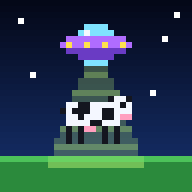

Política de privacidad
Vaquitas Abducidas
Última actualización: 20 de octubre de 2026
Resumen
Vaquitas Abducidas no recolecta, no envía y no comparte ningún dato personal. No tiene cuentas de usuario, publicidad, analíticas ni rastreadores.
Qué se guarda en tu dispositivo
Para recordar tus preferencias, el juego guarda unos pocos valores en el almacenamiento local de tu propio dispositivo. Nunca salen de él:
- Tu puntuación más alta.
- El idioma elegido.
- Si el sonido está activado o silenciado.
- Si juegas en modo navideño o clásico.
- Cuántas partidas has jugado, solo para no repetir la invitación a instalar la app.
Puedes borrarlos cuando quieras desinstalando la app o borrando los datos del sitio en tu navegador.
Funcionamiento sin conexión
El juego guarda una copia de sí mismo en tu dispositivo para que puedas jugar sin internet. Esa copia solo contiene los archivos del juego, no información tuya.
Niños
Como no se recolecta ningún dato, el juego es apto para jugadores de cualquier edad.
Cambios
Si esta política cambia, publicaremos la nueva versión en esta misma página con su fecha de actualización.
Contacto
Si tienes preguntas, escríbenos a david@monoceros.io.
Privacy Policy
Last updated: October 20, 2026
Summary
Vaquitas Abducidas does not collect, send or share any personal data. It has no user accounts, ads, analytics or trackers.
What is stored on your device
To remember your preferences, the game stores a few values in your device's local storage. They never leave it:
- Your high score.
- Your chosen language.
- Whether sound is on or muted.
- Whether you play in Christmas or classic mode.
- How many games you have played, only so the install invitation is not repeated.
You can delete them at any time by uninstalling the app or clearing the site data in your browser.
Offline play
The game keeps a copy of itself on your device so you can play without internet. That copy only contains the game files, not information about you.
Children
Since no data is collected, the game is suitable for players of any age.
Changes
If this policy changes, the new version will be posted on this page with its update date.
Contact
If you have questions, write to david@monoceros.io.